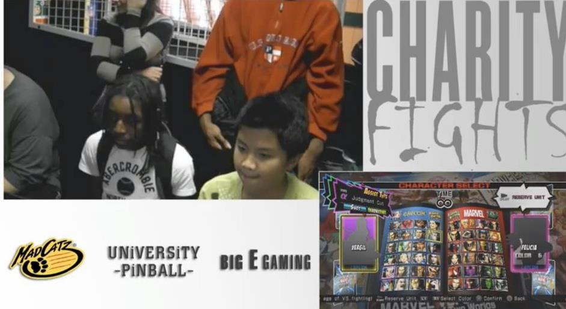
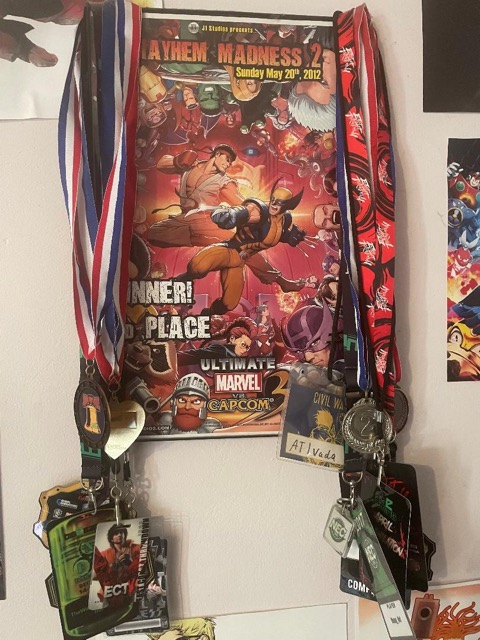

How?
As children im sure we all remember going to local pizza shops/laundromats/bowling alleys/etc, it was at those places that i gained my love for fighting games. Those places always had arcade cabinets of the classic and latest fighting games. Games like Street Fighter , Marvel vs capcom , Mortal Kombat and the list goes on. My junior year in HS, Marvel vs Capcom 3 was released and i fell in love! I was a broke high school student and didn't have money to buy the game so i would play at friends house mostly. Fast forward to my senior year in HS and a new updated game released "Ultimate Marvel Vs Capcom 3" (UMVC3 for short), I had to have it and saved up any money i got my hands on so i could get it on release day. I then learned about a arcade in the city that would host tournaments for the game and i started to attend them , there my Fighting game journey began.
My Breakout
Within a very short time of competing I was playing at a high level and winning local tournaments so I started to attend major tournaments where the stakes were higher and the competitors were better. I traveled along the east coast competing against the best and holding my own with multiple top 8 and top 3 placings, most notably was my 2nd place finish at the Curleh mustashe USA team Tournament. At my height my tournament placings got me ranked the 89th best UMVC3 player in the world out of thousands of players and i was easily one of Philadelphia's top performing players. I even managed to become a sponsored player after I was recruited to join a company called " Guardian Esports", being a part of that team was a game changer because they funded my tournament which allowed me to only have to worry about getting better at the game.
The End?
I retired from competing some years ago but every now and then i pop out just for the love of the game , I've even won some local tournaments in the past year. There were a lot of ups and downs during my journey that I didn't mention but overall im happy with what i accomplished during my run. I met life long friends and made some unforgettable memories , fighting games changed my life and Im eternally grateful.
